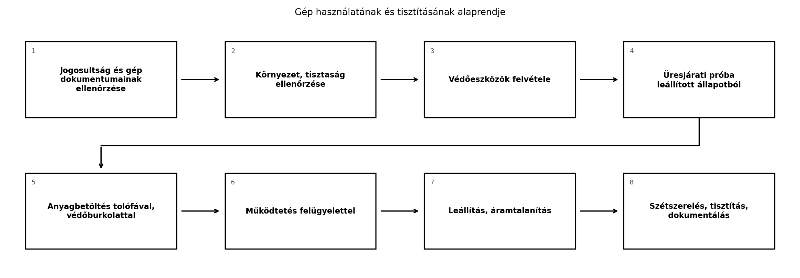

Reggel a konyhán egyszerre kell előkészíteni a zöldségeket, bekapcsolni a kombi párolót, felmelegíteni a levest, és frissen sütni a rántott szeletet. Ha rossz gépet választasz, az étel egyenetlenül sül, romlik a minősége, nő az energiafogyasztás, és baleset is történhet. A gépek ismerete ezért nem karbantartói feladat, hanem a szakács napi munkája.
A Munkavégzés személyi feltételei és a munkaeszközök biztonsága alfejezetben már tanultad az általános gépbiztonsági ellenőrzőlistát. Ebben az alfejezetben a konyhai gépek fajtáit, üzemeltetését, tisztítását és energiatakarékos használatát vesszük végig.
Egy ebédkonyhán a munkafolyamat gépek közötti láncot alkot. Az áru a hűtőszekrényből kerül az előkészítő gépekhez. A zöldséget a robotgép aprítja, a húst a szeletelőgép vagy daráló darabolja. A hőkezelő berendezések ezután készre sütik, párolják vagy főzik az ételt. A kész ételt a tálalásig a melegen tartó berendezés vagy a sokkoló tartja biztonságos hőmérsékleten. A gépek sorrendje tehát a nyersanyag útját követi.
A legfontosabb gépkezelési szabályokat az alábbi folyamatábra foglalja össze:

A folyamatábra lépései használat előtt a gép állapotát, közben a biztonságos működtetést, utána a tisztítást és a dokumentálást szabályozzák. A gyakorlatban minden géphez tartozik gyártói utasítás is.
Definíció. Konyhai gépnek nevezzük azokat a villamos, gáz- vagy kézi hajtású eszközöket, amelyek az élelmiszer előkészítését, hőkezelését, tárolását vagy szállítását végzik. Konyhai berendezésnek a nagyobb, helyhez kötött egységeket nevezzük, például a tűzhelyet, a hűtőkamrát, a kombi párolót.
Szabály. A konyhai gépeket a feladat szerint három nagy csoportba soroljuk:
Az alábbi táblázat áttekinti a legfontosabb gépeket, a fő veszélyeiket és a biztonságos kezelés kulcsát.
| Gépcsoport | Tipikus feladat | Fő veszély | Biztonsági kulcs | Tisztítási pont | Energia/higiénia |
|---|---|---|---|---|---|
| Gáztűzhely | forralás, pirítás, párolás | égés, gázszivárgás | lángőr, gázszag elzárása | égőfej, rács | láng mérete ne lógjon túl |
| Indukciós tűzhely | gyors, pontos főzés | forró edény, mágneses tér | csak alkalmas edény | üveglap kihűlés után | energiatakarékos |
| Kombi pároló | párolás, sütés, gőzölés | forró gőz, ajtónyitás | ajtót lassan, védőkesztyű | kamra, vízkőoldás | teljes kihasználás |
| Billenő serpenyő | nagy adag pirítás, párolás | forró zsiradék kiöntés | lassú billentés, hőálló kesztyű | serpenyőfelület | adagtervezés |
| Olajsütő | bő zsiradékos sütés | zsiradéktűz, fröccsenés | olajszint, hőfok; F osztályú oltó | olajszűrés, csere | olajcsere ütemezése |
| Szeletelőgép | vékony, egyenletes szeletelés | vágás a penge alatt | tolófa, védőburkolat, áramtalanítás | penge, csúszda | csak annyit szeletelni, amennyi kell |
A tűzhely a konyha egyik alapgépe. Három fő típusa van: gáztűzhely, elektromos tűzhely és indukciós tűzhely.
Szabály. Minden tűzhelynél a lángot vagy a főzőzónát akkorára állítsd, hogy ne lógjon túl az edény alján: a túl nagy láng melegíti a konyhát, és gyújtóforrás lehet.
A sütő a tűzhely alatt vagy különállóan helyezkedik el. Lehet gáz- vagy elektromos üzemű, alul-felül sütéssel, hőlégkeveréssel. A hőlégkeveréses sütőben a ventilátor egyenletesebb hőmérsékletet biztosít, ezért több tálcán is süthetsz. Figyelem. Sütőajtót nyitáskor félre kell állni, mert a forró gőz az arcba csaphat. A sütőtérből a tepsit hőálló fogókesztyűvel húzd ki.
A kombi pároló gőz, hőlégkeverés és kombinált üzemmód között válthat. Zöldséget gőzölhetünk, húst süthetünk, tésztát regenerálhatunk benne. Rendelkezhet maghőmérő-szondával, amely a hús belső hőmérsékletét méri. Higiénia. A kombi pároló kamráját minden nap tisztítani kell; vízkőoldást a gyártó utasítása szerint kell végezni. Figyelem. Az ajtót lassan, a kilépő gőz irányától elfordulva nyisd ki. A maghőmérő-szondát a hús legvastagabb részébe szúrd, hogy a biztonságos belső hőmérsékletet mérje.
A kezelőpanelen ① választod az üzemmódot. A sütőtér ② GN 1/1 sínjeire tolod az edényeket; a hátfal terelőlemeze mögötti ventilátor ③ keringteti a levegőt, a gőzfejlesztő ④ adja a gőzt. A szonda ⑤ csúcsa a hús legvastagabb részébe, csonttól távol kerüljön. Az ajtózár ⑥ első fokozata szellőzőállás: résnyire nyitsz, oldalra fordulsz, és megvárod, amíg a gőz eltávozik – a feltépett ajtóból kicsapó gőz arcba és karra csap. A HTML-kiadásban a két nyitási mód egymás után megnézhető.
A billenő serpenyő nagy mennyiségű pörkölt vagy párolt étel készítésére való. A serpenyőt felfűtik, közben keverhető, végül a tartalmát billentéssel ürítik. Biztonsági korlát. A forró zsiradék kiöntése csak hőálló fogókesztyűben, lassú billentéssel történjen. A billentő szerkezetet rendszeresen ellenőrizni kell; elakadás esetén a gépet le kell állítani.
Az olajsütő bő zsiradékos sütésre szolgál, például hasábburgonyához, fánkhoz vagy rántott ételekhez. A hőfokszabályozó tartja az olaj hőmérsékletét. Kritikus pont. A hőmérsékletet a gyártó és a HACCP-terv szerint kell tartani; jellemző tanulási tartomány 160–180 °C (ellenőrizendő: gyártói és technológiai előírás). A nedves élelmiszer hirtelen felhabzik, a víz gőzzé alakul, és kifröcskölheti a forró olajat. Tilos. Zsiradéktüzet soha ne olts vízzel! A víz a forró zsiradékot szétfröcsköli, és a tűz robbanásszerűen fellángol. Használj F osztályú tűzoltó készüléket vagy oltótakarót.
Higiénia. Az olajat naponta szűrni kell, és a gyártó, valamint az üzemi HACCP szerint cserélni. A használt zsiradékot a rendszernek megfelelően kell gyűjteni. Az olajszint mindig a gyártó által megadott minimum és maximum között legyen.
A metszeten látszik, miért fontos a MIN–MAX jel ②: kevés olajnál a fűtőbetét ④ felett vékony a réteg, az olaj túlhevül; túltöltésnél a nedves étel felhabzásakor az olaj kifut. A fűtőbetét alatti hideg zónába ⑤ ülepszik a morzsa, ott nem ég oda, így az olaj lassabban romlik – ezért a leeresztőcsapon ⑥ át, kihűlt olajnál szűrjük. A működtető termosztát ⑦ tartja a beállított hőfokot; ha meghibásodik, a biztonsági termosztát ⑧ lekapcsolja a fűtést. Ha az olaj mégis meggyullad: fedő ⑨ vagy oltótakaró rá, F osztályú készülék – víz soha. A HTML-kiadásban az olaj, a hőzónák és a termosztátok külön rétegként kapcsolhatók.
A grill alulról, a szalamandra felülről fűt. A grill rácsán húst, zöldséget, halat sütünk; a szalamandra kész ételek pirítására, gratinírozására, sajtolvasztásra való. Higiénia. A rácsot és a zsírfelfogó tálcát használat után zsírtalanítani kell, mert a maradék zsír füstöl, és tűzveszélyes lehet.
A hűtőszekrény a gyorsan felhasználandó nyersanyagok és félkész ételek tárolására való. Higiénia. A hűtőszekrény belső hőmérsékletét a HACCP-tervben rögzített tartományban kell tartani; jellemző tanulási érték 0–5 °C (ellenőrizendő: NÉBIH-útmutató / hatályos rendelet / üzemi HACCP). A hőmérsékletet naponta ellenőrizni és dokumentálni kell.
Higiénia. A nyers húst mindig a kész étel alatt tárold, hogy a húsból kicsöpögő lé ne szennyezze a kész ételeket. A polcok sorrendjét a HACCP-terv pontosan megadja. A hűtőszekrényben a FIFO elvet kövesd: ami hamarabb jár le, kerüljön előre.
Hiba. Forró ételt ne rakj a hűtőszekrénybe, mert megemeli a belső hőmérsékletet, és a többi élelmiszer is felmelegszik. Előbb a sokkolóval vagy gyorshűtővel hűtsd vissza.
A fagyasztó a hosszabb tárolásra szolgál. A fagyasztott élelmiszert a felhasználás előtt hűtőben, hideg vízben vagy szabályozottan, mikrohullámon olvaszthatod ki, de soha ne meleg konyhapulton hagyd. A fagyasztó tárolási hőmérséklete jellemzően -18 °C vagy hidegebb (ellenőrizendő: fagyasztott áruk tárolási előírásai). Higiénia. A fagyasztóba csak előhűtött, jól becsomagolt, feliratozott élelmiszer kerüljön. A jégkiválás rontja a hatásfokot, ezért a leolvasztást a gyártó és a HACCP szerint kell ütemezni.
A sokkoló hűtő arra való, hogy a frissen főtt ételt nagyon gyorsan lehűtse. Kritikus pont. A forró étel gyors lehűtése azért fontos, mert a veszélyes hőmérsékleti zónában a baktériumok gyorsan szaporodnak. A pontos lehűtési időt és célhőmérsékletet a HACCP-terv és a sokkoló gyártója adja meg; jellemző tanulási érték: a főzés végétől 2 órán belül 20 °C alá, további 4 órán belül 5 °C alá (ellenőrizendő: NÉBIH-útmutató / HACCP-terv); cook-chill rendszerben a gyártó és a HACCP-terv ennél szigorúbb célt (pl. 90 perc alatt 3 °C, ellenőrizendő) írhat elő. A sokkoló használata előtt az edényt ne fedd le teljesen, hogy a hideg levegő keringhessen.
A szeletelőgép körkéssel vág egyenletes vastagságú szeleteket, például felvágottból, sajtból, kenyérből. Biztonsági korlát. A gépet csak betanított dolgozó használhatja. Működés közben a kezed soha ne kerüljön a vágókorong közelébe: a szeletelendő árut a szántartóval/tolófával told a késhez, a maradékot ne kézzel told rá; a forgó korongot semmivel sem érintheted. Tisztításhoz előbb állítsd le, áramtalanítsd, és a vágókorongot védőkesztyűben szereld ki. A vágási vastagságot a gép állítójával szabályozd, ne a kéz nyomásával.
Allergén. Ha ugyanazzal a szeletelővel gluténtartalmú kenyeret és sajtot szeletelsz, a morzsa átkerülhet az allergiás vendég ételére. Allergiás vendég esetén külön, megtisztított vagy elkülönített gépet és eszközt használj.
A húsdaráló etetőcsőből, csigából, késből és tárcsából áll. Szabály. A húst csak tolófával nyomd az etetőcsőbe. A gépet áramtalanítás után szereld szét; az alkatrészeket zsírtalanítani és fertőtleníteni kell. Higiénia. Nyers hús darálása után a kezed, a vágódeszka és a gép alkatrészei is nyers húsosak; ezzel ne érj kész ételhez. A daráló kését és tárcsáját használat után azonnal mosd el, mert a húsmaradék megszárad.
Az ábra a szétszerelt darálót a tengely mentén, összeszerelési sorrendben mutatja: a házba ④ először a csiga ⑤ kerül, utána a kés ⑥ – élével a tárcsa felé, különben nem vág, hanem tépi a húst –, majd a tárcsa ⑦ és végül a kézzel meghúzott szorítógyűrű ⑧. Szétszerelni fordított sorrendben, csak leállított gépen, kihúzott dugasszal szabad; a vészleállító ⑨ nem leválasztás. Az etetőcső ② szűkítése azért van, hogy a kéz ne férjen a csigához: a húst mindig a tolófával ③ nyomd le, soha ne ujjal. A HTML-kiadásban az összeszerelés lépésenként lejátszható.
A robotgép kever, dagaszt, aprít, szeletel. Szabály. Szerszámot cserélni, a tálba kézzel nyúlni csak leállított és áramtalanított gépen szabad. A dagasztókar alá ne nyúlj működés közben. A robotgép tálját ne töltsd túl, mert a massza kifuthat.
A botmixer merülő keverőszárral pürésít, habosít, dresszinget készít. Figyelem. Forró folyadékba óvatosan merítsd, mert a fröcskölés égést okozhat. A készüléket kikapcsolva emeld ki, nehogy a forgó penge lecsapja a forró levet. A botmixert ne üzemeltesd a folyadékból kiemelve, mert a keverőszár szétfröcsköl.
A robotgépen az üst ① az üstemelő karral ② emelhető a szerszámhoz; működés közben a védőrács ③ zárva van, nyitott rácsnál a reteszelés miatt a gép nem indul. A szerszámot a tésztához választod: dagasztókar a kelt tésztához, keverőlapát a kevert masszákhoz és töltelékekhez, habverő a habokhoz. A botmixernél az edényt legfeljebb kb. a harmadáig töltsd, a keverőfejet teljesen merítsd be, csak utána kapcsold be, és kikapcsolva emeld ki – a felszínen forgó fej a forró levest kifröcsköli. Ezt a szabályt alkalmazod a krémlevesek pürésítésénél is. A HTML-kiadásban a helyes és a hibás kép egymás után megnézhető.
A vákuumozó eltávolítja a levegőt a tasakból, és légmentesen lezár. Kritikus pont. A vákuumozás nem helyettesíti a hőkezelést és a hűtést; a vákuumozott nyersanyagot is hűtve kell tárolni. Higiénia. Minden tasakra kerüljön felirat: tartalom, dátum, allergének, nyomonkövetési adat. A vákuumozott alacsony hőmérsékletű hőkezelés szabályait a Sous-vide és alacsony hőmérsékletű hőkezelés alfejezet tárgyalja.
Eljárás. Az alábbi lépéseket minden gépnél tartsd be.
Szabály. A védőburkolatok eltávolítása, a reteszek áthidalása, a vészleállító kiiktatása tilos. Az ilyen átalakítás súlyos balesetet okozhat, és munkavédelmi szabálysértés.
Továbbvitt eredmény. Ezt a gépek biztonságos kezelésének és tisztításának rendjét használjuk az Edények, kéziszerszámok és késtechnika alfejezetben, valamint a Konyhai helyiségek, eszközök, gépek és folyamatok kifejezései alfejezetben.
A napi karbantartás a kezelő feladata: tisztítás, ellenőrzés, a kisebb eltérések jelentése. Az időszakos karbantartást, például a gázkészülék égőjének felülvizsgálatát, a hűtőkör ellenőrzését, az elektromos biztonsági mérést csak szakszerviz vagy arra jogosult szakember végezheti. Szabály. A géphez csak a gyártó által engedélyezett alkatrészt és szerszámot használj; a burkolat megbontása áramtalanítás után is a szakszerviz dolga. A gázkészülékek égőjét és a gázcsövek csatlakozásait rendszeresen ellenőriztetni kell; a gázszivárgás-érzékelőt ne takard el. A hűtőberendezés kondenzátorát portalanítani kell, mert a poros hűtő többet fogyaszt.
Energiatakarékosság. A gépek fogyasztása jelentős költség. Az energia-megtakarítás nem rontja az étel minőségét, ha betartod az alábbiakat:
Számítás. Egy kombi pároló óránként átlagosan 12 kWh elektromos energiát fogyaszt (tanulási érték, ellenőrizendő: gyártói adat). A gép egy üzemnapon 4,5 órát üzemel. A napi fogyasztás:
Ha az energiatakarékos program 15 %-kal csökkenti a fogyasztást, az új napi fogyasztás:
A megtakarítás naponta . Ezt a számítási módot részletesebben a Százalékszámítás, kerekítés, mértékegységek és statisztikai ábrázolás alfejezetben gyakoroljuk.
A gépek minőségellenőrzése nemcsak a gép működését, hanem a készített étel minőségét és biztonságát is jelenti. Ellenőrizd az alábbiakat:
Higiénia. Az élelmiszerrel érintkező felületek tisztaságát nem elég ránézni: ha tapintásra zsíros, vagy savanyú szaga van, a tisztítást meg kell ismételni.
Egy konyhán a szakács a fánkot sütötte olajsütőben. Az olaj a hibás hőfokszabályozó miatt túlhevült, füstölni kezdett, majd meggyulladt (a gép túlmelegedés elleni biztonsági termosztátja nem működött). A szakács vizet akart önteni a tűzre. A víz a forró zsiradékot szétfröcskölte, a tűz fellángolt, és a konyhában kisebb tűz keletkezett. A dolgozó égési sérülést szenvedett.
Tanulság. Füstölő olaj esetén azonnal kapcsold ki a gépet; a biztonsági termosztát működését a karbantartás részeként ellenőrizni kell. Zsiradéktüzet tilos vízzel oltani. Az olajsütő közelében F osztályú tűzoltó készüléknek és oltótakarónak kell lennie. A hőfokot a technológiai előírás szerint kell tartani és mérni, a fánkot óvatosan, lehetőleg lyukas kanállal kell az olajba engedni. A biztonsági berendezések és az oltóeszközök megléte a munkavédelmi és tűzvédelmi ellenőrzés része.
Önellenőrzés – válaszok
1. feladat (A) Sorolj fel három hőkezelő és három előkészítő gépet. Mindegyikhez egy mondatban írd le, milyen feladatra választanád.
2. feladat (A) Mi a különbség a hűtőszekrény és a sokkoló hűtő között? Miért nem szabad forró ételt közvetlenül a hűtőszekrénybe tenni?
3. feladat (B) Rendezd helyes sorrendbe a gépkezelés lépéseit: anyagbetöltés; üresjárati próba; leállítás, áramtalanítás; jogosultság ellenőrzése; tisztítás; védőeszközök felvétele; dokumentálás; működtetés felügyelettel.
4. feladat (B) Egy hűtőszekrény naponta 0,9 kWh-t fogyaszt. Mennyi energiát fogyaszt 30 nap alatt? Ha a fogyasztást 10 %-kal csökkentjük az ajtózárási fegyelemmel, mennyi lesz az új havi fogyasztás?
5. feladat (C) Egy konyhán a szeletelőgépet reggel sajt, majd gluténtartalmú kenyér szeletelésére használják. Milyen allergén kockázatot jelent ez, és milyen eljárással kerülheted el a keresztszennyeződést?
6. feladat (D) Figyelj meg a gyakorlatban egy botmixer használatát. Írj ellenőrzőlistát a használat előtti, közbeni és utáni ellenőrzésekről. Térj ki a védőburkolatra, az áramtalanításra, a tisztításra és az allergénekre is.
1. feladat (A) Hőkezelő gépek: gáztűzhely (forralás, pirítás), kombi pároló (gőzölés, sütés), olajsütő (bő olajos sütés). Előkészítő gépek: szeletelőgép (vékony szeletelés), húsdaráló (darált hús készítése), robotgép (keverés, dagasztás). A megfogalmazás lehet más, de a fő feladatnak egyeznie kell.
2. feladat (A) A hűtőszekrény tárolásra való, hőmérséklete 0–5 °C (ellenőrizendő). A sokkoló a frissen főtt ételt gyorsan hűti le. A forró étel a hűtőszekrényben megemeli a belső hőmérsékletet, ami a többi élelmiszerre is veszélyes.
3. feladat (B) Helyes sorrend: jogosultság ellenőrzése → védőeszközök felvétele → üresjárati próba → anyagbetöltés → működtetés felügyelettel → leállítás, áramtalanítás → tisztítás → dokumentálás.
4. feladat (B) . Az új fogyasztás .
5. feladat (C) Kockázat: a kenyérmorzsa gluténtartalmú, és a szeletelőgépről a sajtra vagy más élelmiszerre kerülhet, ami gluténérzékeny vendégnél allergiás reakciót okozhat. Megoldás: külön, jól megtisztított szeletelőgép vagy külön, gluténmentes eszközök; a munkafolyamatot úgy szervezni, hogy előbb a gluténmentes terméket szeleteljük, majd a gluténtartalmút, és utána teljes körű tisztítást végzünk; az allergénre vonatkozó tájékoztatást az eladásnál biztosítani kell.
6. feladat (D) Például: Használat előtt ellenőrizd a botmixer vezetékét, a keverőszár épségét, a tisztaságot. Közben a készüléket csak kikapcsolva merítsd át, a forró folyadékba óvatosan. Használat után áramtalanítsd, a keverőszárat szereld le, mosd el és fertőtlenítsd. Ha allergiás vendég ételéhez használod, előbb szereld szét és mosd el a keverőszárat, vagy használj az adott allergéntől elkülönített keverőszárat. A feladat értékelése a gyakorlati megfigyelés alapján történik.
A konyhai gépek három csoportba sorolhatók: hőkezelő berendezések, hűtőberendezések és előkészítő gépek. A hőkezelők közül a tűzhely, a sütő, a kombi pároló, a billenő serpenyő, az olajsütő, a grill és a szalamandra a legfontosabb. A hűtőszekrény 0–5 °C körüli tartományban tárol (ellenőrizendő), a fagyasztó -18 °C vagy hidegebb (ellenőrizendő), a sokkoló pedig gyorsan visszahűt. Az előkészítő gépek (szeletelő, húsdaráló, robotgép, botmixer, vákuumozó) növelik a pontosságot és a gyorsaságot, de szigorú vágás- és áramütés-védelmet igényelnek. Minden gépnél be kell tartani a gépkezelési rendet: jogosultság, gépellenőrzés, védőeszköz, üresjárati próba, biztonságos anyagbetöltés, felügyelet, leállítás, áramtalanítás, tisztítás és dokumentálás. A védőburkolat eltávolítása tilos. Zsiradéktüzet soha ne olts vízzel. A gépek tisztítása élelmiszeripari tisztító- és fertőtlenítőszerrel történik, allergén keresztszennyeződés esetén elkülönített eszközt használsz.
Továbbvitt eredmény. A gépek biztonságos kezelésének és tisztításának rendjét az Edények, kéziszerszámok és késtechnika alfejezetben a késeknél és kéziszerszámoknál is alkalmazzuk, a Konyhai helyiségek, eszközök, gépek és folyamatok kifejezései alfejezetben pedig idegen nyelven nevezzük meg ezeket a gépeket.
A fejezet a munkavédelmi törvény, a munkaeszközök biztonsági követelményeiről szóló rendelet, az európai gépbiztonsági irányelv, az élelmiszer-higiéniai rendeletek (852/2004/EK), a NÉBIH jó higiéniai gyakorlat útmutatói és a gyártói kezelési utasítások elvein alapul. A következő pontokat a kiadás előtt ellenőrizni kell: hűtőszekrény tárolási hőmérséklete (0–5 °C), fagyasztó hőmérséklete (-18 °C), sokkoló lehűtési idő és célhőmérséklet, olajsütő hőmérséklet-tartománya, kombi pároló hőmérséklet-tartománya, energiafogyasztási tanulási adatok (kombi pároló 12 kWh/h, hűtőszekrény 0,9 kWh/nap), indukciós tűzhely pacemakerre vonatkozó kockázata. A diagramban bemutatott lépések nem helyettesítik az üzemi gépátadási és HACCP-dokumentációt.